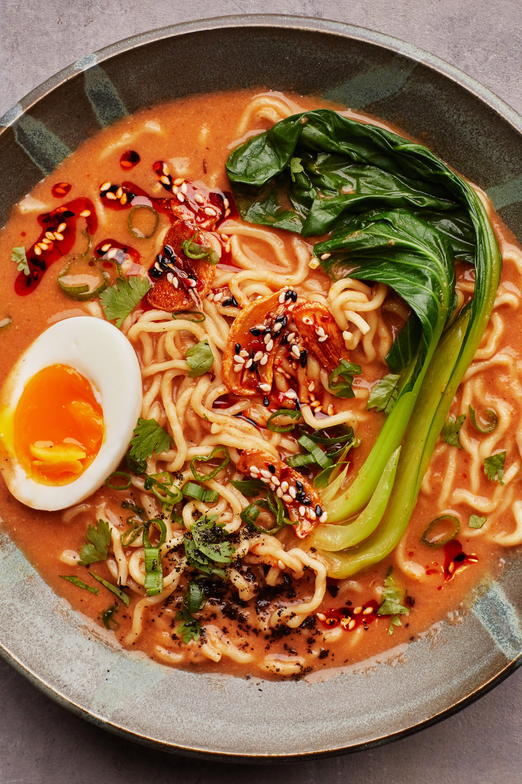

Ramen

About Ramen
This flavorful bowl of ramen in miso broth is full of delicious flavors that will definitely
make your palate sing!
If you've been dreaming of Japan, this is the perfect meal for you.
Ingredients
- 1 (8 ounce) beef sirloin steak
- ½ cup gluten-free soy sauce (tamari)
- 1 teaspoon coconut oil
- 4 cups beef broth
- 2 teaspoons miso paste
- 1 teaspoon minced garlic
- 1 teaspoon sesame oil
- 2 (3 ounce) packages ramen noodles
- salt and ground black pepper to taste